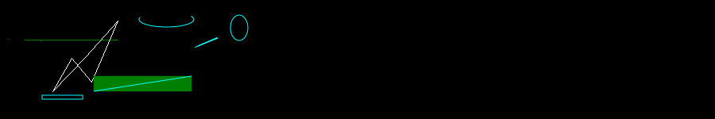
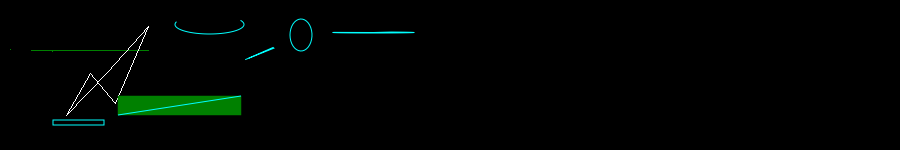

Setting up PIL and aggdraw
I've recently been getting into generative art again. This time, I've decided to work with PIL since I've gotten super comfortable with python recently.
The best thing about python for generative art is using the Jupyter notebook - I think its structure works beautifully like a sketchbook.
Starting with PIL(Pillow)
#!conda install pillow -y
## OR
!pip install pillow
Requirement already satisfied: pillow in /usr/lib/python3/dist-packages (7.0.0)
Once pillow is installed, I can import PIL and start using it. To begin with, I define some functions to make it easier to use aggdraw.
from PIL import Image, ImageDraw
import random
# Initialize Parameters
image_height = 150
image_width = 900
seed = 58
random.seed(seed)
def getRandomPoint(xoffset = 0):
return (random.randrange(image_height) + xoffset), random.randrange(image_height)
def collapse(arr):
'''
Converts a 2d array into a 1d array
[[1,2,3],[4,5,6]] -> [1,2,3,4,5,6]
'''
return [item for t in arr for item in t]
def getRandomPoints(count, offset = 0):
v = [getRandomPoint(offset) for _ in range(count)]
v = collapse(v)
return v
Once I do that, I can initialize a new image and start drawing. I'm still using only the basic draw functions from PIL.
image = Image.new("RGB", (image_width, image_height), "black")
draw = ImageDraw.Draw(image)
draw.polygon([getRandomPoint() for _ in range(3)], fill="green")
draw.polygon([getRandomPoint() for _ in range(5)],
outline="white")
image

Using the aggdraw library
The AggDraw library provides a python interface on top of the AGG library. Anti-Grain Geometry (AGG) is an Open Source, 2D vector graphics library, written by Maxim Shemanarev in C++.
It can be installed using conda or pip and imported as below
#!conda install -c conda-forge aggdraw -y
## OR
!pip install aggdraw
import aggdraw
Requirement already satisfied: aggdraw in /home/addy/.local/lib/python3.8/site-packages (1.3.15)
The Draw Class
Draw(image_or_mode, size, color=None)- (constructor) Creates a drawing interface object.- Parameters
image_or_mode- A PIL Image, or a mode string. The following modes are supported: “L”, “RGB”, “RGBA”, “BGR”, “BGRA”.size- If a mode string was given, this argument gives the image size, as a 2-tuple.color- An optional background color specifier. If a mode string was given, this is used to initialize the image memory. If omitted, it defaults to white with full alpha.
Initializing a draw object gives us access to all its drawing methods (arc, chord, ellipse, line, path, pieslice, polygon, rectangle, symbol and text). Lets start by looking at rectangle:
Draw.rectangle(xy, pen, brush)
- Draws a rectangle. If a brush is given, it is used to fill the rectangle. If a pen is given, it is used to draw an outline around the rectangle. Either one (or both) can be left out.
- Parameters:
xy- A 4-element Python sequence (x, y, x, y), with the upper left corner given first.pen- Optional pen object created by the Pen factory.brush- Optional brush created by the Brush factory.
After calling any of the drawing methods, calling flush() will actually make the drawings onto the image.
offset = 50
d = aggdraw.Draw(image)
v = getRandomPoints(2, offset)
print(v)
d.rectangle(v)
d.flush()
image
[53, 125, 104, 120]
That didn't draw anything at all! Thats because all drawing methods also expect either a Pen or a Brush object as parameters and if you do not supply any one of them, it will not do anything.
The Pen Class
Pen(color, width=1, opacity=255)- (constructor) Creates a pen object.- Parameters:
color- Pen color. This can be a color tuple, a CSS-style color name, or a color integer (0xaarrggbb).width=- Optional pen width.opacity=- Optional pen opacity. The default is to create a solid pen.
- Returns:
- A pen object.
Lets try drawing a rectangle again using this.
p = aggdraw.Pen("cyan")
d.rectangle(v, p)
d.flush()
image
The Brush class
Brush(color, opacity=255)- (constructor) Creates a brush object.- Parameters:
color- Brush color. This can be a color tuple, a CSS-style color name, or a color integer (0xaarrggbb).opacity=- Optional brush opacity. The default is to create a solid brush.
- Returns:
- A brush object.
offset += 50
v = getRandomPoints(2, offset)
b = aggdraw.Brush("green")
d.rectangle(v, b)
d.flush()
image
Draw.line(xy, pen)
- Draws a line joining all the points on the
xyparameter. - Parameters
xy- A Python sequence (x, y, x, y, …). If more than two coordinate pairs are given, they are connected in order, to form a polyline.pen- A pen object created by the Pen factory method.
Since we are using the same v as the rectangle, this function simply draws a diagonal of the rectangle (its inverted because the rectangle vertices themselves are inverted).
d.line(v, p)
d.flush()
image
Draw.arc(xy, start, end, pen=None)
- Draws an arc.
- Parameters:
xy- A 4-element Python s|equence (x, y, x, y), with the upper left corner given first.start- Start angle.end- End angle.pen- Optional pen object created by the Pen factory.
offset += 50
v = getRandomPoints(2, offset)
start = random.randrange(360)
end = random.randrange(360)
d.arc(v, start, end, p)
d.flush()
image
Draw.chord(xy, start, end, pen=None, brush=None)
- Draws a chord. If a brush is given, it is used to fill the chord. If a pen is given, it is used to draw an outline around the chord. Either one (or both) can be left out.
- Parameters:
xy: A 4-element Python sequence (x, y, x, y), with the upper left corner given first.start: Start angle.end: End angle.pen: Optional pen object created by the Pen factory.brush: Optional brush object created by the Brush factory.
offset += 50
v = getRandomPoints(2, offset)
start = random.randrange(360)
end = random.randrange(360)
d.chord(v, start, end, p)
d.flush()
image
Draw.ellipse(xy, pen, brush)
- Draws an ellipse. If a brush is given, it is used to fill the ellipse. If a pen is given, it is used to draw an outline around the ellipse. Either one (or both) can be left out.
- Parameters:
xy- A bounding rectangle, given as a 4-element Python sequence (x, y, x, y), with the upper left corner given first. To draw a circle, make sure the coordinates form a square.pen- Optional pen object created by the Pen factory.brush- Optional brush created by the Brush factory.
offset += 50
v = getRandomPoints(2, offset)
d.ellipse(v, p)
d.flush()
image

Draw.pieslice(xy, start, end, pen=None, brush=None)
- Draws a pieslice. If a brush is given, it is used to fill the pieslice. If a pen is given, it is used to draw an outline around the pieslice. Either one (or both) can be left out.
- Parameters:
xy- A 4-element Python sequence (x, y, x, y), with the upper left corner given first.start- Start angle.end- End angle.pen- Optional pen object created by the Pen factory.brush- Optional brush object created by the Brush factory.
offset += 50
v = getRandomPoints(2, offset)
start = random.randrange(360)
end = random.randrange(360)
d.pieslice(v, start, end, p)
d.flush()
image

Draw.polygon(xy, pen, brush)
- Draws a polygon. If a brush is given, it is used to fill the polygon. If a pen is given, it is used to draw an outline around the polygon. Either one (or both) can be left out.
- Parameters:
xy- A Python sequence (x, y, x, y, …).pen- Optional pen object created by the Pen factory.brush- Optional brush object created by the Brush factory.
offset += 50
v = getRandomPoints(8, offset)
d.polygon(v, p)
d.flush()
image
The Path Object
Path()- (constructor) creates a path object for use with path.- Returns:
- A
Pathobject.
- A
Path.lineto(x, y)
- Adds a line segment to the path.
- Parameters:
x- The x coordinatey- The y coordinate
Path.close()
- Closes the current path.
Finally, we need to draw this path on the canvas.
Draw.path(xy, path, pen=None, brush=None)
- Draws a path at the given positions. If a brush is given, it is used to fill the path. If a pen is given, it is used to draw an outline around the path. Either one (or both) can be left out.
- Parameters:
xy- A Python sequence (x, y, x, y, …).path- A symbol object created by the Path factory.pen- Optional pen object created by the Pen factory.brush- Optional brush object created by the Brush factory.
offset += 50
path = aggdraw.Path()
path.lineto(*getRandomPoint(offset)) #First .lineto() sets starting point of the path
path.lineto(*getRandomPoint(offset))
path.lineto(*getRandomPoint(offset))
path.lineto(*getRandomPoint(offset))
path.lineto(*getRandomPoint(offset))
path.lineto(*getRandomPoint(offset))
path.close() # Optional in this case
d.path(path, b)
d.flush()
image
Path.rlineto(x, y)
- Adds a line segment to the path, using relative coordinates.
- Parameters:
x- The relative x coordinatey- The relative y coordinate
offset += 50
path = aggdraw.Path()
path.lineto(*getRandomPoint(offset)) #First .lineto() sets starting point of the path
path.rlineto(20, 50)
path.rlineto(-40, -30)
path.rlineto(50, 0)
path.rlineto(-40, 30)
path.close() # Optional in this case
d.path(path, p)
d.flush()
image
Path.curveto(x1, y1, x2, y2, x, y)
- Adds a bezier curve segment to the path.
- Parameters:
x1- The absolute x-coordinate for P1 control pointy1- The absolute y-coordinatex2- The absolute x-coordinate for P2 control pointy2- The absolute y-coordinatex- The absolute x-coordinate for P3 control pointy- The absolute y-coordinate
Below, I first draw the control point lines (P0-P1 and P2-P3) then use curveto to draw the actual bezier curve.
offset += 100
pgrey = aggdraw.Pen("grey")
path = aggdraw.Path()
xs, ys = getRandomPoint(offset)
path.lineto(xs, ys) #First .lineto() sets starting point of the path
x1, y1, x2, y2, xd, yd = getRandomPoints(3, offset)
d.line((xs, ys, x1, y1), pgrey)
d.line((x2, y2, xd, yd), pgrey)
path.curveto(x1, y1, x2, y2, xd, yd)
xs, ys = xd, yd
x1, y1, x2, y2, xd, yd = getRandomPoints(3, offset)
d.line((xs, ys, x1, y1), pgrey)
d.line((x2, y2, xd, yd), pgrey)
path.curveto(x1, y1, x2, y2, xd, yd)
xs, ys = xd, yd
x1, y1, x2, y2, xd, yd = getRandomPoints(3, offset)
d.line((xs, ys, x1, y1), pgrey)
d.line((x2, y2, xd, yd), pgrey)
path.curveto(x1, y1, x2, y2, xd, yd)
xs, ys = xd, yd
x1, y1, x2, y2, xd, yd = getRandomPoints(3, offset)
d.line((xs, ys, x1, y1), pgrey)
d.line((x2, y2, xd, yd), pgrey)
path.curveto(x1, y1, x2, y2, xd, yd)
path.close() # Optional in this case
d.path(path, p)
d.flush()
image
Path.rcurveto(x1, y1, x2, y2, x, y)
- Adds a bezier curve segment to the path using relative coordinates.
- Parameters:
x1- The relative x-coordinate for P1 control pointy1- The relative y-coordinatex2- The relative x-coordinate for P2 control pointy2- The relative y-coordinatex- The relative x-coordinate for P3 control pointy- The relative y-coordinate
Below, I first draw the control point lines (P0-P1 and P2-P3) in grey then use rcurveto to draw the actual bezier curve in blue.
offset += 150
pgrey = aggdraw.Pen("grey")
path = aggdraw.Path()
xs, ys = offset, 10
path.lineto(xs, ys) #First .lineto() sets starting point of the path
d.line((xs, ys, xs+40, ys+40), pgrey)
d.line((xs+60, ys+40, xs+100, ys), pgrey)
path.rcurveto(50, 50, 50, 50, 100, 0)
d.line((xs+100, ys, xs+140, ys+40), pgrey)
d.line((xs+60, ys+40, xs + 100, ys + 100), pgrey)
path.rcurveto(50, 50, -50, 50, 0, 100)
d.line(( xs + 100, ys + 100, xs + 140, ys + 140), pgrey)
d.line((xs+40, ys+140, xs, ys), pgrey)
path.rcurveto(50, 50, -50, 50, -100, -100)
path.close() # Optional in this case
d.path(path, p)
d.flush()
image
And that covers most of the api.